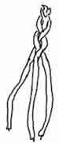
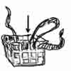
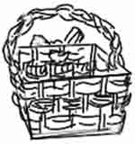

Something You Can Do
Have you ever gone strawberry picking like Rosie did? Or maybe you buy your strawberries at the store. In this fun project you can recycle a plastic strawberry container and make it into
A Woven Basket
You will need:
- a green plastic fruit basket
- 3 pipecleaners
- strips of cloth, crepe paper streamers, or ribbons
- First wash the basket and dry it well.
- Next begin weaving the cloth strips, streamers, or ribbon in and out of the plastic bars. Choose colors that look pretty together and try to keep your rows smooth. Or you can use twisted fabric to make a bumpy basket!
